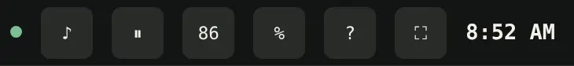
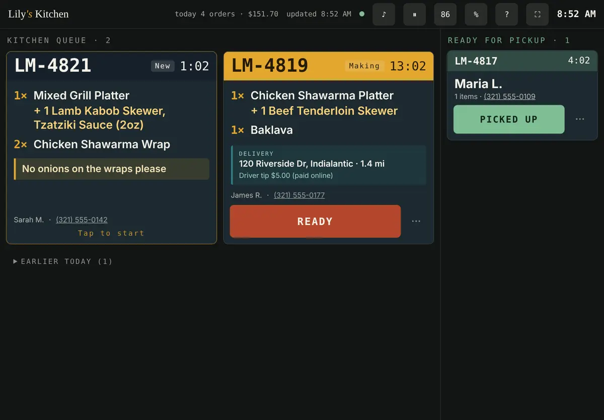

The sound is louder now
Your team said they barely hear new orders. The chime is now much louder and rings three times. It also rings even when the iPad is on silent. To get the new sound, close the kitchen screen app and open it again once.
- Press the iPad's volume up button until the bar is full.
- Tap the screen once after you open it in the morning. If you see a yellow bar "Tap anywhere to enable the new-order sound", tap it.
- Tap ♪ at the top. You should hear the chime. If not, go back to step 1.
- Keep the kitchen screen open in front. If someone opens another app on the iPad, the screen can't ring.
- Still hard to hear by the grill? Connect a small Bluetooth speaker to the iPad. The chime plays through it.
While an order waits and nobody has tapped it, the screen rings again every 30 seconds until someone does.
The buttons at the top

- Green dot = connected. Red = no internet. Orders are not lost: taps are saved and sent when the internet is back.
- ♪Test the sound. If it shows 🔕, the sound is off. Tap anywhere on the screen once.
- ⏸Pause online orders when you're too busy: 20 minutes, 1 hour, the rest of today, or until you resume. The website stops taking orders straight away. An orange bar shows while paused. Tap Resume to take orders again.
- 86Ran out of something. Find the dish or add-on and tap: Available, Out today (comes back by itself at 4am), Out (until you switch it back), or Hidden (off the menu). The website changes straight away.
- %Offers. Tap an offer to switch it on or off. New offers are made on your offers page (number 4 below).
- ?Practice. Plays the 2-minute walkthrough with a pretend order. Nothing reaches a customer.
- ⛶Full screen. Hides the browser bars.
- ☾Only shows if the iPad might go to sleep. Plug the iPad in.
Next to the buttons: "today 4 orders · $151.70" is today's online orders and sales.
An order, start to finish
Left side = orders to cook. Right side = ready, waiting for the customer.

- NewNew order arrives with the chime. Tap the order anywhere to say "we've started". The ringing stops.
- READYTap READY when the food is bagged. The order moves to the right.
- PICKED UPTap PICKED UP when the customer takes it. For delivery the button says OUT FOR DELIVERY, with the address, miles and the driver's tip.
- 1:02Timer = how long the order has waited. The top of the order turns yellow when it's getting late and red when it's late.
- +Yellow "+" lines are the customer's add-ons (extra skewer, sauce). The yellow box is the customer's note. Read both.
- ···Cancel an order, or open the payment to refund it. Cancelling does not give the money back. The refund is done in Stripe.
Tapped the wrong thing? An UNDO button shows at the bottom for 5 seconds. A picked-up order also waits under "Earlier today" with a Recall button for one hour.
Your offers page (the "dashboard")
This is where you make and change offers: buy one get one, % off, lunch deals, with the days and hours they run.
The link is private, so it is in your email, not here. Search your email for "Your private Lily's links" and tap "1. Your offers page". Then tap Share, then "Add to Home Screen", so it opens like an app every time. The kitchen screen link is in the same email.
Can't find the email? Tell Zachary and he will send it again.
Add-ons
Customers already see add-ons when they tap Add on a dish. On every platter and bowl:
- 1 Chicken Kabob Skewer $7.99, 1 Kafta Skewer $7.99
- 1 Beef Tenderloin Skewer $8.99, 1 Shrimp Skewer $8.49
- 1 Lamb Kabob Skewer $9.99, Extra Gyro Meat $4.99
- Sautéed Veggies, Extra Rice, Gluten-Free Bread, and extra sauces
Wraps, burgers and quesadillas have sides (and sauces). Salads have protein. Family Specials have extra skewers, hummus, sauces and pita. These are your in-store prices; online is 3% more, like the rest of the menu.
Not yet: Starters, From the Kitchen, Sides & Wings, Kids, Desserts and Drinks. Send the add-ons and prices you want for those on WhatsApp and they will be added.